水面の光
軽井沢
到着した夕方、池の水面にイルミネーションが映っていた。光のツリーが上にも下にも並んでいて、どちらが本物かわからなくなる。夜は三人で乾杯した。
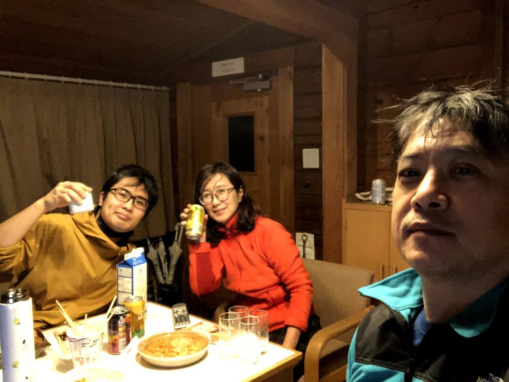
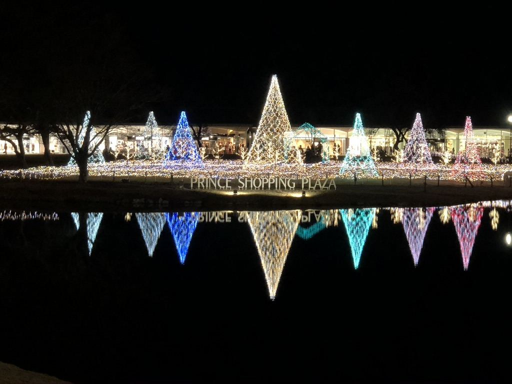
軽井沢 2020年12月26日〜28日
2020年の年末、僕らは三人で軽井沢へスキーに出かけた。ゴーグルをつけた息子は、もうすっかり大人の顔をしていた。
軽井沢
到着した夕方、池の水面にイルミネーションが映っていた。光のツリーが上にも下にも並んでいて、どちらが本物かわからなくなる。夜は三人で乾杯した。

軽井沢のスキー場
朝、池はうっすらと凍っていた。冬の高原の空気は、吸いこむと鼻の奥がつんとする。ゲレンデでひと滑りしたあと、レストハウスで蕎麦を食べた。スキー場の蕎麦というのは、なぜかいつもとてもおいしい。
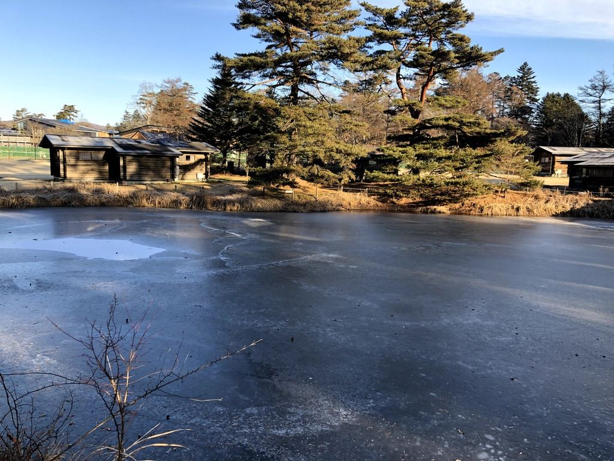
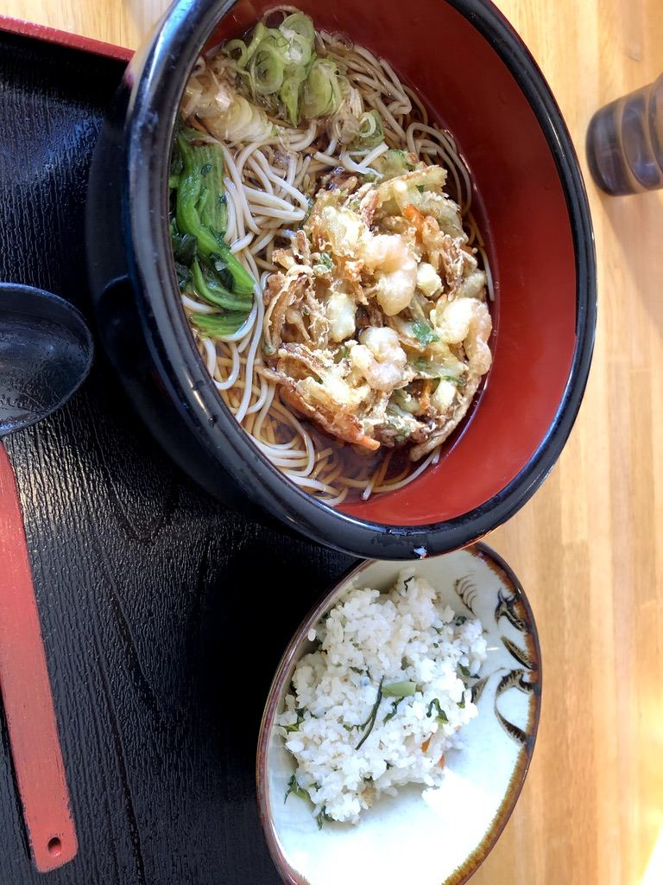
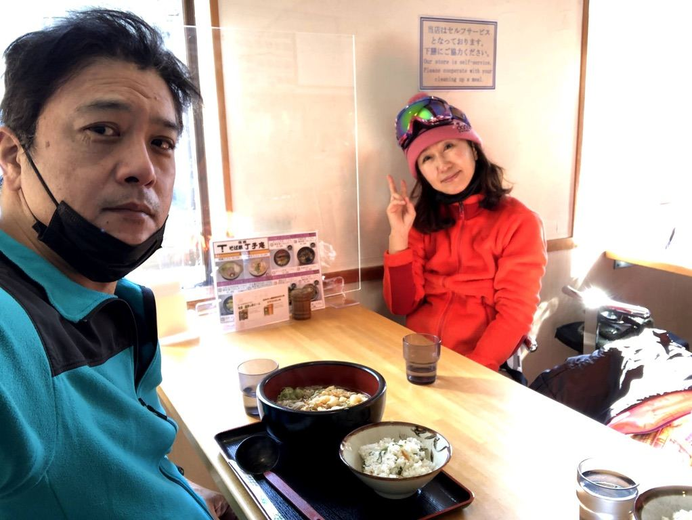
軽井沢のスキー場
最終日は朝から雲が低かった。それでも昼前には空が晴れて、ゲレンデの向こうに浅間山が白い煙をあげているのが見えた。妻はストックを持ってピースをした。息子はゴーグルの奥で、少しだけ得意そうだった。
帰り道に寄った店で、三人で温かいものを食べた。
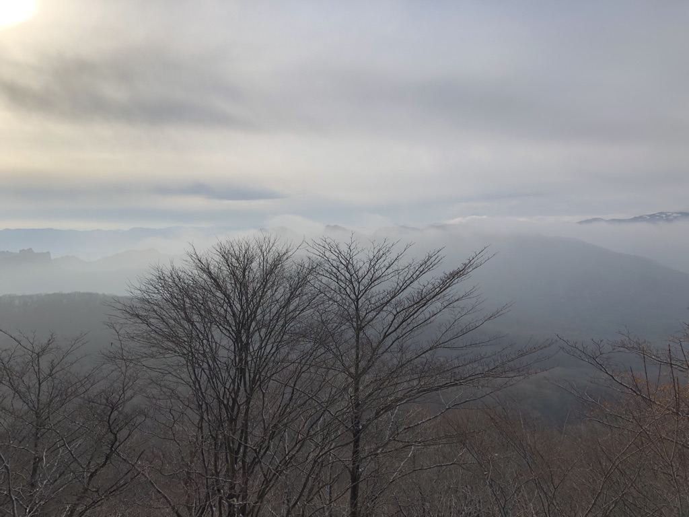
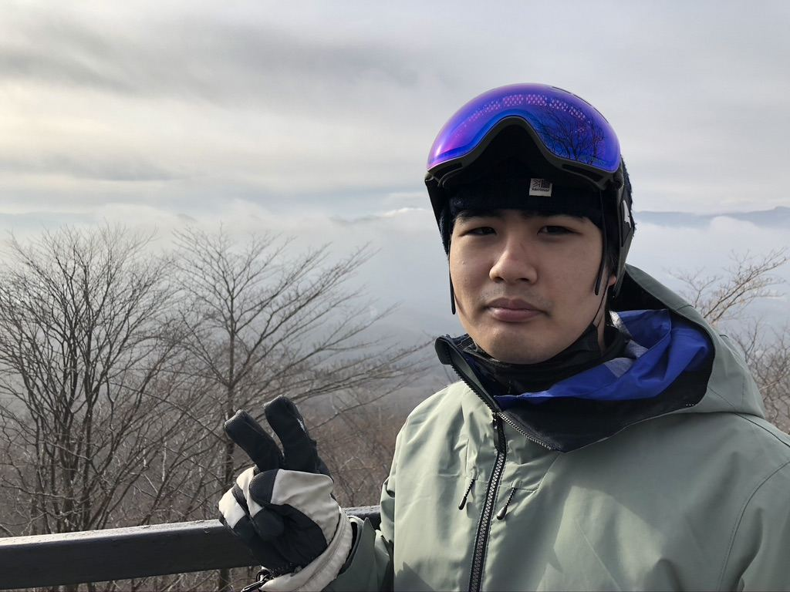
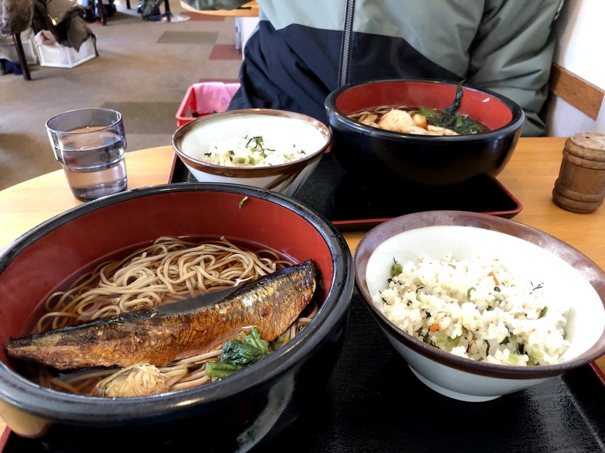
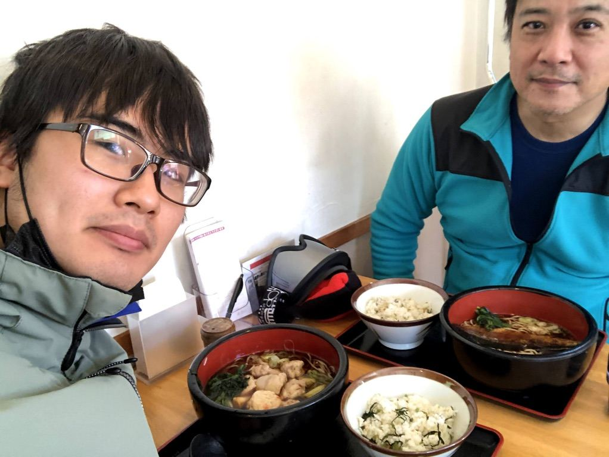
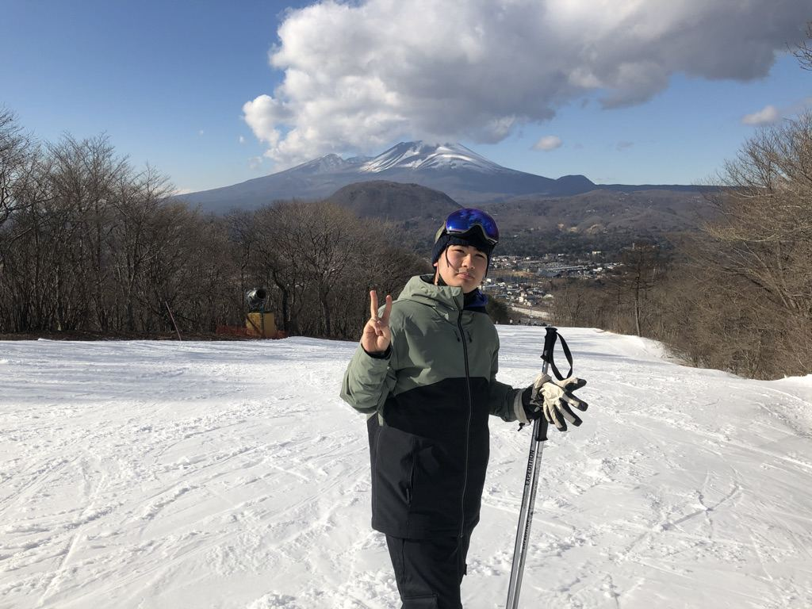
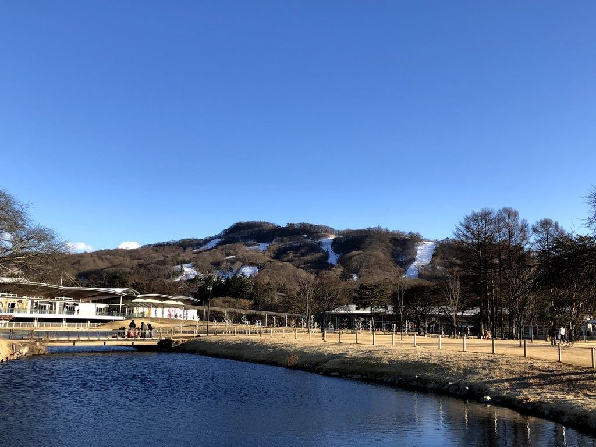
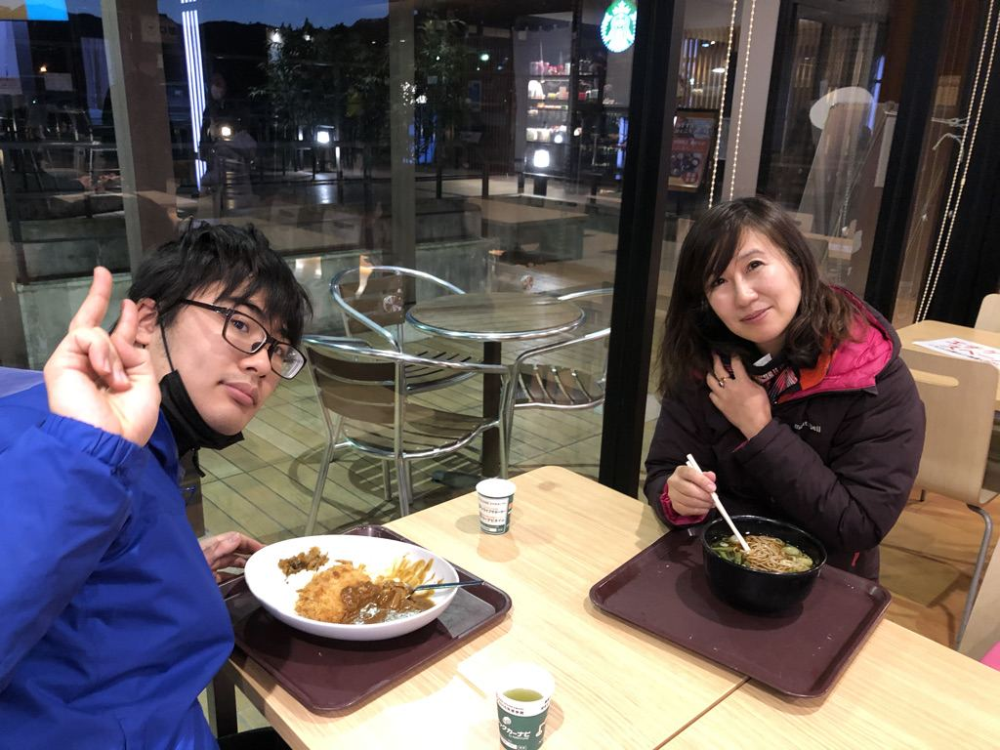